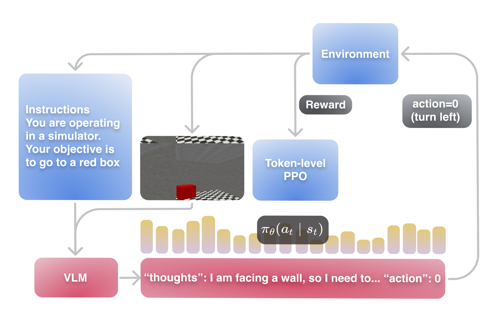
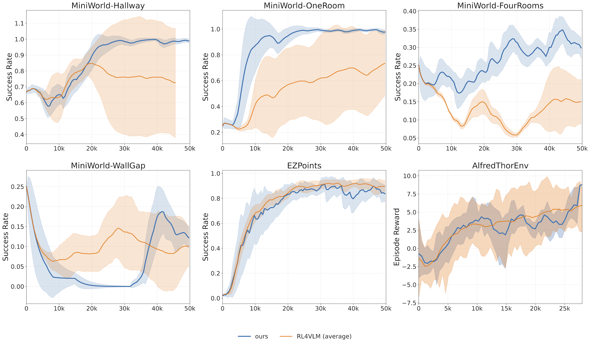
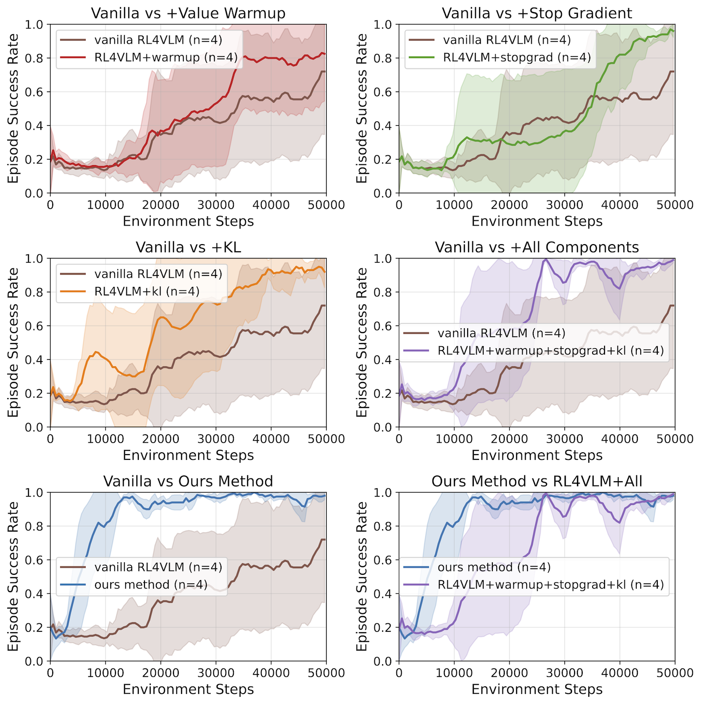
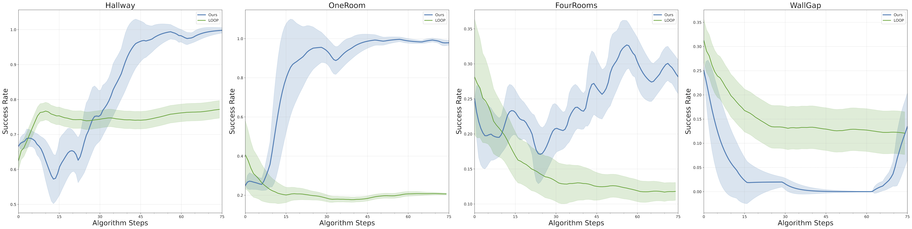

Enhancing Vision-Language Model Training with Reinforcement Learning in Synthetic Worlds for Real-World Success
AAMAS 2026
Abstract
Interactive multimodal agents must turn raw visual observations into reliable sequences of structured, language-conditioned actions, yet training such competence under long horizons and sparse feedback remains brittle. We present VL-DAC, a lightweight reinforcement learning recipe for vision-language agents that is hyperparameter-robust and easy to deploy.
VL-DAC performs PPO updates at the token level for actions while learning a step-level value function. This decoupling removes unstable weighting terms and yields faster, more reliable convergence without introducing extra tuning knobs.
Training a single VLM in one cheap synthetic environment at a time (MiniWorld, Gym-Cards, ALFWorld, or WebShop) produces policies that transfer beyond their training simulators: +50% relative on BALROG (agentic control), +5% relative on VSI-Bench hardest split (spatial planning), and +2% on VisualWebBench (web navigation), with no loss in general image understanding.
Key Findings
Experiments across lightweight simulators—MiniWorld, Gym-Cards, ALFWorld, and WebShop—demonstrate that transferable agentic skills can be reliably acquired by RL training when two conditions are met:
- Cheap simulators: The simulator is inexpensive enough to enable broad exploration.
- Robust RL algorithm: The RL algorithm can be applied out-of-the-box without brittle hyperparameter tuning.
The main bottleneck is not high-fidelity simulation, but the practicality and hyperparameter robustness of the RL learning rule—a prerequisite for large-scale, reproducible experimentation.
Method: Vision-Language Decoupled Actor-Critic

VL-DAC cleanly separates learning signals to enable stable, hyperparameter-free RL training:
Token-Level Policy Loss
PPO updates applied independently to each action token, enabling fine-grained credit assignment without brittle weighting terms.
Step-Level Value Loss
Value function computed once per environment step with gradients stopped at the VLM backbone—eliminating cross-signal interference.
Stabilization Techniques
- KL Regularization: Per-token forward KL penalty to prevent policy drift.
- Value Warm-up: Warm up the value head before updating the policy.
- Stop-Gradient: Block gradients from value head into the backbone.
This minimal stabilization suite enables robust training at VLM scale—without the fragile, environment-specific hyperparameters required by prior methods like RL4VLM or ArCHer.
Training Stability
VL-DAC vs. RL4VLM

Success rates across six environments: MiniWorld (Hallway, OneRoom, FourRooms, WallGap), Gym-Cards/EZPoints, and ALFWorld. While RL4VLM requires careful tuning of λ per environment, VL-DAC performs robustly without extra hyperparameter tuning.
Ablation Study

Adding KL regularization, value warm-up, and stop-gradient sequentially reduces variance. Replacing the step-level policy loss with VL-DAC's token-level objective further smooths learning and improves final performance.
Long-Horizon Credit Assignment
VL-DAC vs. LOOP

On sparse-reward MiniWorld tasks, LOOP's success rate plateaus within 15–30k steps due to high-variance sequence-level gradients. VL-DAC continues improving throughout training by leveraging a step-level critic for stable, well-shaped advantages.
Skill Transfer Results
Training in a single lightweight simulator produces policies that transfer to diverse downstream benchmarks:
+50%
BALROG
Agentic control in game-like environments
+5%
VSI-Bench
Hardest split: spatial planning & route reasoning
+2%
VisualWebBench
Web navigation and UI interaction
BALROG Results
Training with ALFWorld yields a >50% relative improvement in agentic success, with further gains under Chain-of-Thought prompting. Multi-step RL environments directly enable the emergence of complex, agentic behavior.
| Benchmark | Base Model | ALFWorld-tuned |
|---|---|---|
| BALROG (naive) | 3.21% ± 0.75% | 4.19% ± 0.92% |
| BALROG (CoT) | 3.94% ± 0.98% | 6.02% ± 1.19% |
General Benchmark Performance
Crucially, VL-DAC training maintains or improves general image and video understanding across major benchmarks (GQA, MMBench, MME, Video-MME, etc.)—no degradation in perception capabilities.
Environments
MiniWorld
3D navigation tasks (Hallway, OneRoom, FourRooms, WallGap) for spatial reasoning and route planning.
Gym-Cards / EZPoints
Card-selection logic environment for testing basic decision-making capabilities.
ALFWorld
Text-conditioned household tasks combining navigation, spatial reasoning, and agentic capabilities.
WebShop
E-commerce browsing environment requiring long-term understanding and web-based planning.
All environments produce RGB frames plus textual instructions. The agent responds with free-form text (thoughts + actions) parsed into environment actions.
Discussion
A Two-Stage Roadmap
Our results outline a concise two-stage roadmap for converting a VLM into a competent interactive agent:
- Stage 1 (Algorithmic): Adopt a token-wise PPO objective with a step-level value head. This decoupling eliminates brittle mixture coefficients and tuning-sensitive knobs.
- Stage 2 (Environmental): Expose the agent to lightweight simulators covering diverse action spaces—navigation, manipulation, logic, and browser interaction.
Why Simulator Diversity Matters
Performance gains track the breadth of acquired skills. ALFWorld imparts agentic priors (+50% on BALROG), MiniWorld contributes spatial planning (+5% on VSI-Bench), and WebShop injects UI-sequencing patterns (+2% on VisualWebBench). Diverse simulators enable broad, transferable skill acquisition.
Limitations
- Sparse-reward variance: Still struggles in extremely sparse-reward settings.
- Discrete actions only: Continuous-control robotics remains untested.
- Single-agent: Multi-agent cooperation/competition not addressed.
- Memory constraints: Long-term abstract memory and planning (e.g., WallGap) remain challenging.
Citation
@misc{bredis2025enhancing,
title = {Enhancing Vision-Language Model Training with Reinforcement Learning in Synthetic Worlds for Real-World Success},
author = {Bredis, George and Dereka, Stanislav and Sinii, Viacheslav and Rakhimov, Ruslan and Gavrilov, Daniil},
year = {2025},
eprint = {2508.04280},
archivePrefix = {arXiv},
primaryClass = {cs.LG},
doi = {10.48550/arXiv.2508.04280},
url = {https://arxiv.org/abs/2508.04280},
note = {Accepted to AAMAS 2026 (to appear).}
}